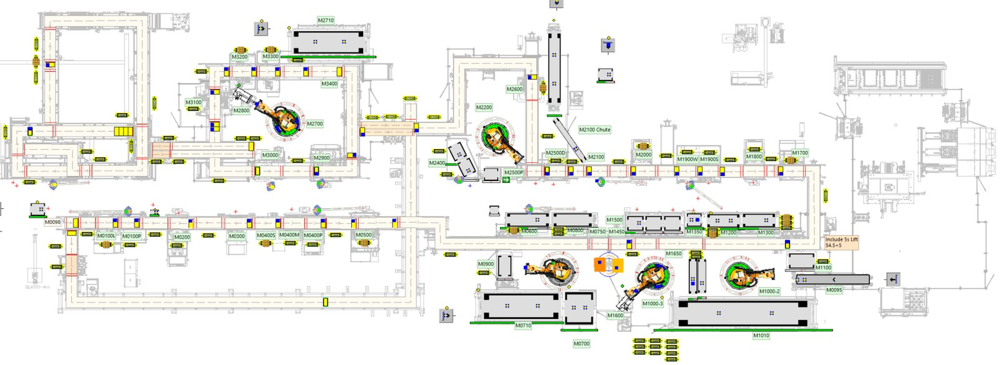

Throughput & Buffer Optimization
Optimize Your Production: Before You Build, While You Scale, or When You Need to Improve
What's Slowing Down Your Production?
The challenge
Typical issues we see
- Bottlenecks and flow restrictions limiting overall throughput
- Underutilization or overloading of resources, leading to inefficiencies
- Starving and blocking conditions disrupting workflow balance
- Suboptimal buffer sizes impacting production stability
- Incorrect assumptions in production planning causing costly delays
- Unverified logistics and dispatching strategies, increasing material handling costs
- Traffic congestion and inefficient transport routes, reducing logistics service levels
Key Inputs Required for Smart Simulation & Optimization
Process Flow & Layout Details
Understanding how operations are structured
Equipment & Resource Specifications
Data on machines, labor, material handling, and automation
Production Volume & Cycle Time
Required throughput rates to meet demand
Logistics & Material Flow Details
Transportation methods, buffer sizes, and warehouse strategies
Material-Flow Definition & SKU-Level
Mapping each Stock Keeping Unit (SKU), location, and conveyance method
Historical Traffic & Congestion
Real-world congestion conditions for accurate flow simulation
Deliverables: Data-Driven Solutions That Transform Production Efficiency
Validated Simulation Model & Video Report
A digital replica of your production system that visualizes material flow, layout interactions, and inefficiencies, forming the foundation for all improvement strategies and scenario testing.
Work in Process (WIP) & Line-Side Inventory Optimization
Calibrate buffer sizes and staging logic to reduce congestion, eliminate shortages, and align with takt time for balanced and synchronized production.
What-If Scenario & Shift Analysis
Evaluate multiple production conditions such as shift configurations, equipment breakdowns, and demand fluctuations to ensure adaptable, resilient, and future-ready operations.
JPH & OEE Improvement Framework
Validate and enhance Jobs Per Hour (JPH) and Overall Equipment Effectiveness (OEE) to ensure alignment with production targets and operational efficiency.
Bottleneck & Workstation Load Analysis
Identify production constraints and high-load areas at workstations to resolve flow interruptions and stabilize throughput across the line.
Production Flow & Task Sequencing Strategy
Refine the sequence of operations and process hand-offs to reduce unnecessary movements, improve layout connectivity, and enhance overall workflow.
Operator & Equipment Utilization Study
Analyze labor, machinery, and workstation usage patterns to maximize value-added time, reduce idle capacity, and improve the overall efficiency of available resources.
Return on Investment (ROI) & Cost Trade-Off Analysis
Assess various production scenarios and layout options to identify the most cost-effective solutions with strong operational performance and long-term value.
In practice
Simulation and analysis outputs

Next step
Prevent downtime and delays through simulation-validated planning and resource optimization.
Tell us about your line, your targets and your constraints. We come back with a scoped proposal, not a sales call.